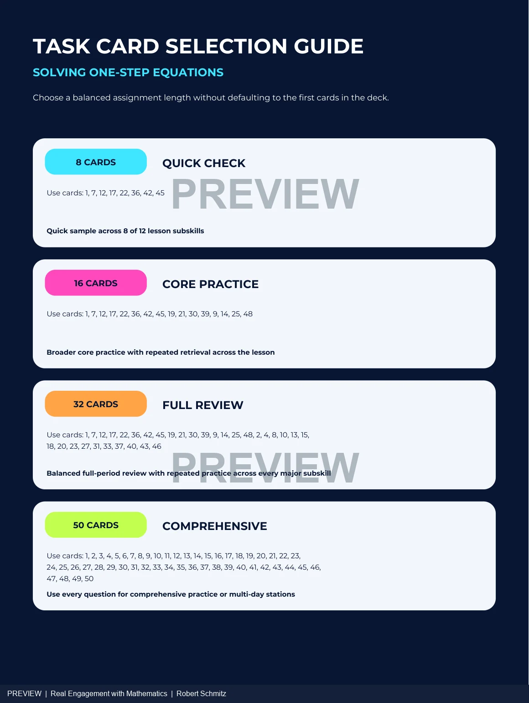
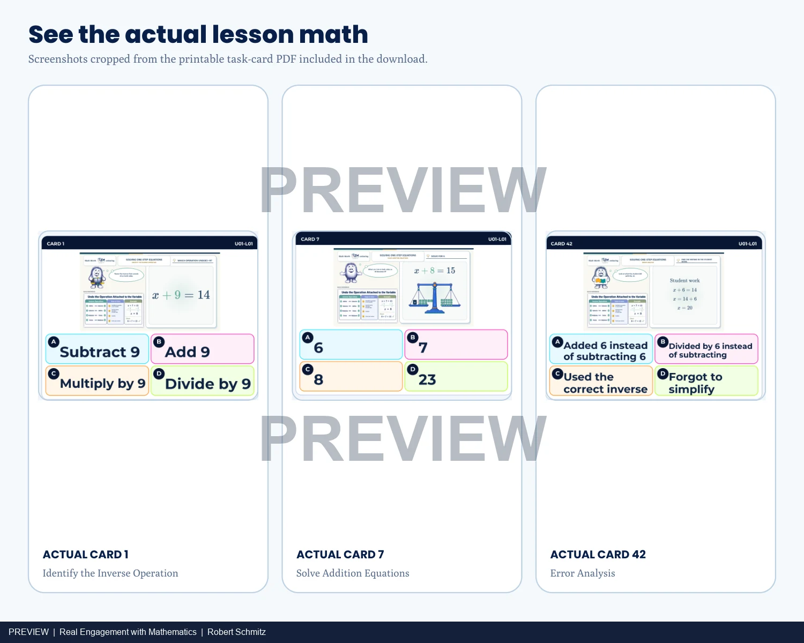

Assessment design · Teacher decision support
Choose the right practice set.
A 50-card one-step-equation bank with assignment choices that make scope and coverage visible.
Inspect the materials ↓Choose practice around the purpose
A short check and a full review need different assignments. This one-step-equation system gives teachers curated selections from a 50-card bank, alongside two printable layouts and recording sheets.
Inside the materials
One bank. Different teaching decisions.
{kind=link}

{kind=link}

Why the selection guide matters
Start with the coverage decision
The 8-card quick check samples eight of the lesson’s twelve listed subskills. The longer selections expand coverage and retrieval. The guide makes that tradeoff visible instead of asking teachers to choose the first few cards.
The 4-up and 8-up layouts offer different print densities. Recording sheets and a teacher key support running the same bank in a classroom routine. The broader package also includes Blooket and Gimkit references; this showcase presents the printable materials.
What this sample establishes
These excerpts demonstrate task variety and assignment support. They do not establish assessment reliability, learner gains, or current availability of the external game sets.
Next evaluation: ask an instructor to choose cards for a specific misconception, explain the selection, and note where the guide needs clarification.